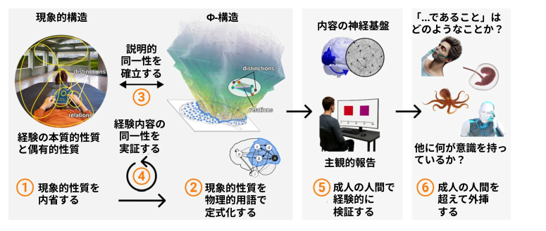

Integrated Information Theory (IIT) proposes that all quality is structure: the quality of every
experience can be characterized as a phenomenal structure and accounted for as a causal structure. The
IIT method can be called intrinsic in that, first, it starts by characterizing the intrinsic structure of a
single experience in an absolute sense (not relative to other experiences) and, second, it preserves this
intrinsic perspective when accounting for experience in physical terms. By contrast, the method of the
Qualia Structure paradigm (QStr) can be called extrinsic in that its main tool is relational
characterization, used to investigate both the quality of experience and the corresponding neural or
information structures.
統合情報理論（IIT）は、あらゆる「質」とは「構造」であると提唱しています。すなわち、あらゆる経験の質は「現象的構造」として特徴づけられると同時に、「因果的構造」としても説明できるというものです。IITの手法は「内在的」であると言えます。その理由は、第一に、単一の経験が持つ内在的な構造を（他の経験との相対的な関係ではなく）絶対的な意味で特徴づけることから出発する点にあり、第二に、経験を物理的な用語で説明する際にも、この内在的な視点を維持する点にあります。対照的に、「クオリア構造」パラダイム（QStr）の手法は「外在的」であると言えます。なぜなら、この手法の主要な手段は「関係的特徴づけ」であり、それを用いて経験の質と、それに対応する神経的あるいは情報的な構造の双方を調査するからです。
This chapter gives conceptual clarity to IIT’s intrinsic method, assesses the theoretical compatibility
between QStr and IIT, and sketches concrete ways QStr can complement IIT. We argue that QStr and
IIT share experience and its structure as their explanandum, while their methodological starting points
and explanans are distinct yet complementary. QStr can bolster IIT’s current research program by
offering novel ways to approach narrow qualia (e.g., color), which are notoriously difficult to
decompose through introspection. QStr can also supply IIT with new mathematical tools—for example,
from category theory and metric geometry. In turn, IIT may help ground QStr’s relational, extrinsic
structures in absolute, intrinsic structures.
本章では、IIT（統合情報理論）の固有の手法を概念的に明確化し、QStrとIITの理論的整合性を検討するとともに、QStrがIITを補完しうる具体的な方法を概説する。我々は、QStrとIITが「経験とその構造」を説明対象（explanandum）として共有しつつも、その方法論的な出発点や説明原理（explanans）においては互いに異なりながらも相補的な関係にあると論じる。QStrは、内省による分解が極めて困難とされる「狭義のクオリア」（例：色）への新たなアプローチ法を提示することで、IITの現在の研究プログラムを強化しうる。また、QStrは圏論や距離幾何学といった新たな数学的ツールをIITに提供することも可能である。他方で、IITはQStrの「関係的かつ外在的な構造」を「絶対的かつ内在的な構造」に根拠づける一助となりうるだろう。
A trope of twentieth-century philosophy of science is that physics can tell us about relations among
things but not about their “intrinsic quality” (Russell 2022 [1927]) or “intrinsic nature” (Eddington
1928). Classical arguments point to, for example, mass or charge: such constructs may help us make
sense of the structure and behavior of, say, an electron, but what are mass and charge in themselves?
The split of quality vs. structure has figured strongly in contemporary traditions of structural realism
(Maxwell 1970; Worrall 1989; Ladyman & Ross 2007), and also in philosophy of mind. Various
thinkers today entertain the idea—usually attributed to Russell—that consciousness1 may in fact be the “intrinsic quality” that eludes the structural analysis of the physical world (e.g., Chalmers 2003, 2015;
Strawson 2006; Goff 2017; Mørch 2014; Grasso 2019; Mindt 2021). Others have resisted this move by,
for example, denying that phenomenal qualities are intrinsic, private, non-structural properties at all
(e.g., Dennett 1988; Frankish 2016) or outright rejecting their existence (e.g., Churchland 1986).
20世紀の科学哲学においてよく見られる論点の一つに、物理学は物事の間の関係については語り得るものの、それらの「内在的性質（intrinsic quality）」（Russell 2022 [1927]）や「内在的本質（intrinsic nature）」（Eddington 1928）については何も語れない、というものがある。古典的な議論では、例えば質量や電荷がその例として挙げられる。こうした構成概念は、例えば電子の構造や振る舞いを理解する助けにはなるかもしれないが、質量や電荷それ自体とは一体何なのだろうか。この「性質対構造」という対立軸は、現代の構造実在論の系譜（Maxwell 1970; Worrall 1989; Ladyman & Ross 2007）や心の哲学においても重要な位置を占めている。今日、様々な思想家が――一般にラッセルに帰される考えであるが――意識1こそが、実は物理的世界の構造的分析からはこぼれ落ちてしまう「内在的性質」なのではないか、という説を検討している（例：Chalmers 2003, 2015; Strawson 2006; Goff 2017; Mørch 2014; Grasso 2019; Mindt 2021）。一方で、こうした動きに異を唱える論者もいる。彼らは、例えば、現象的性質が内在的かつ私的で非構造的な特性であること自体を否定したり（例：Dennett 1988; Frankish 2016）、あるいはそれらの存在を全面的に否定したり（例：Churchland 1986）することで、この説に抵抗している。
1 Consciousness will be treated as roughly synonymous with experience, phenomenal properties, or qualia.
意識は、経験、現象的性質、あるいはクオリアとほぼ同義のものとして扱われる。
Integrated Information Theory (IIT) takes a different tack by collapsing the dichotomy: all quality is
structure proposes IIT—intrinsic structure, that is. For IIT, intrinsic structure captures what a content
of experience is in an absolute sense—in itself, not relative to something else. And the claim all quality
is structure captures the central conjecture of IIT—the theory’s explanatory identity (Albantakis et al.
2023; IIT Wiki/Identity): the quality of every experience can be characterized as an (intrinsic)
phenomenal structure, which can be accounted for physically by an (intrinsic) causal structure, called a
Φ-structure (Fig. 1, steps 1–3).
統合情報理論（IIT）は、ある二分法を解消することによって、これとは異なるアプローチをとります。すなわち、IITは「あらゆる質（クオリティ）は構造である」と提唱するのです――それも、「内在的」な構造として。IITにおいて、内在的構造とは、ある経験の内容が絶対的な意味で――つまり、何か他のものとの関係においてではなく、それ自体として――どのようなものであるかをとらえるものです。そして、「あらゆる質は構造である」という主張は、IITの中心的な仮説、すなわち同理論の「説明的アイデンティティ」（Albantakis et al. 2023; IIT Wiki/Identity）を端的に表しています。その内容は、あらゆる経験の質は（内在的な）現象的構造として特徴づけることができ、かつ、それは「Φ（ファイ）構造」と呼ばれる（内在的な）因果構造によって物理的に説明可能である、というものです（図1、ステップ1～3）。

Figure 1. The IIT Method (adapted from IIT Wiki/Overview). 1) IIT begins from the immediate fact that
experience is present and uses introspection to identify properties that are true of every experience (axioms).
2) Each essential phenomenal property is formulated as a physical (or causal) property that the substrate of
consciousness must fulfill (postulates). This yields the notion of a Φ-structure, comprising causal distinctions
and relations which correspond one-to-one to phenomenal distinctions and relations, as shown schematically.
3) IIT conjectures an explanatory identity: the quality of experience corresponds to the specific “shape” of the
Φ-structure, while the quantity of experience corresponds to its Φ value (the amount of integrated information).
All essential and accidental properties of experience have their counterpart in causal properties of the Φstructure, with no additional ingredients. Experience remains primary—epistemologically and ontologically—
yet the identity is explanatory in the sense that it offers a way to make sense of experience in objective, physical
terms. 4) IIT then uses this phenomenal–physical identity to account for contents of experience such as space,
time, and objects (ch. 18). This can be thought of as repeating the previous steps (hence the “iteration” circle),
but this time for accidental rather than essential phenomenal properties. Contents of experience are accounted
for as Φ-folds (substructures) within the greater Φ-structure. 5) IIT makes predictions that can be validated in
humans who can report their experiences, validating the neural substrate of consciousness as a whole and of
specific contents. 6) IIT can guide principled inferences about consciousness in cases where reports are
unavailable, such as unresponsive patients, non-human animals, or artificial systems.
図1. IITの手法（IIT Wiki/Overviewより改変）。1) IITは、経験が現に存在するという直接的な事実から出発し、内省を用いてあらゆる経験に当てはまる性質（公理）を特定する。2) 本質的な現象的性質のそれぞれは、意識の基盤が満たすべき物理的（あるいは因果的）な性質として定式化される（要請）。これにより、図式的に示されるように、現象的な区別や関係と一対一に対応する因果的な区別や関係から構成される「Φ（ファイ）構造」という概念が導かれる。3) IITは説明的な同一性を仮説として提示する。すなわち、経験の質はΦ構造の特定の「形状」に対応し、経験の量はそのΦ値（統合された情報の量）に対応するというものである。経験のあらゆる本質的・付随的な性質は、Φ構造の因果的性質に対応しており、そこに追加の要素は必要とされない。経験は依然として（認識論的にも存在論的にも）根本的なものであるが、この同一性仮説は、経験を客観的かつ物理的な用語で理解する道筋を提供するという意味で、説明的な役割を果たす。4) 次にIITは、この現象と物理の同一性を用いて、空間、時間、物体といった経験の内容を説明する（第18章）。これは、先の手順を繰り返すものと見なすことができるが（それゆえ「反復（iteration）」の円が描かれている）、今回は本質的な現象的性質ではなく、付随的な現象的性質を対象とする。経験の内容は、より大きなΦ構造の内部にある「Φフォールド（Φ-folds）」（部分構造）として説明される。5) IITは、自身の経験を報告できる人間を対象に検証可能な予測を行い、意識全体および特定の経験内容の神経基盤を検証する。6) IITは、反応のない患者、ヒト以外の動物、人工システムなど、報告が得られない場合であっても、意識に関する原理に基づいた推論を導くことができる。
As discussed in chapter 18 (Grasso et al. 2026),
2 the method of IIT can be called intrinsic first and
foremost because it characterizes the intrinsic structure of a single experience absolutely. By contrast,
most other structural approaches to consciousness (Kleiner 2024) can be called extrinsic in that they
investigate the relationships that one experience (or content) has to others. That said, extrinsic
approaches—such as the Qualia Structure paradigm (QStr, Tsuchiya et al. 2016; Tsuchiya & Saigo
2021; Maier & Tsuchiya 2026; Tsuchiya 2025)—can bolster and complement IIT’s account of
consciousness as intrinsic structure.
第18章（Grasso et al. 2026）で論じられているように、
2 IITの手法は、何よりもまず「内在的（intrinsic）」であると言えます。なぜなら、それは単一の経験が持つ内在的構造を絶対的なものとして特徴づけるからです。対照的に、
意識に関する他の多くの構造的アプローチ（Kleiner 2024）は、ある経験（または内容）が他の経験と持つ関係性を探究するという点で、
「外在的（extrinsic）」であると言えます。とはいえ、外在的
アプローチ――例えばクオリア構造パラダイム（QStr：Tsuchiya et al. 2016; Tsuchiya & Saigo
2021; Maier & Tsuchiya 2026; Tsuchiya 2025）など――は、意識を内在的構造とみなすIITの説明を
補強し、補完するものであり得ます。
2 Note that “chapter 18” refers to Grasso et al. (2026) throughout this preprint.
本プレプリント全体において、「第18章」はGrasso et al. (2026)を指すことに留意されたい。
This chapter picks up where chapter 18 leaves off. It aims 1) to give conceptual clarity to IIT’s intrinsic
method, 2) to provide a first assessment of the theoretical compatibility between QStr and IIT, and 3)
to sketch a few concrete ways in which QStr can complement IIT’s current research program.
本章は、第18章の議論を引き継ぐものである。その目的は、1) IITの「内在的（intrinsic）」な手法を概念的に明確にすること、2) QStrとIITとの理論的整合性について最初の評価を行うこと、そして 3) QStrがIITの現在の研究プログラムを補完しうる具体的な方法をいくつか概説すること、にある。
The phrase intrinsic structure may appear a contradiction in terms if one’s point of departure is the
material world. In other words, if we assume that what exists are molecules, atoms, subatomic particles,
etc., it seems nothing has intrinsic structure because every “thing” we observe can be subdivided until
we arrive at fundamental entities and properties such as electrons, mass, and charge. But the notion of
intrinsic structure is sensible if we start from experience itself: every moment of experience can be
observed, through introspection, to be both intrinsic and structured.3 For example, your experience
reading these words is intrinsic in that it exists for itself, from the inside—not for something else, from
the outside (IIT Wiki/Intrinsicality Axiom). And the experience can be decomposed into specific
phenomenal qualities—the word you are seeing, the spatial feeling of its extension on the page, the
temporal feeling of its duration as you read, etc.—each of which can be characterized as phenomenal
substructures (IIT Wiki/Composition Axiom; also see Box 2: How does IIT use introspection?). This is
how IIT comes by the concept of intrinsic structure: it begins not as a logical proposition about the outer
world but as an introspective observation of the properties of experience as a phenomenal structure
(Fig. 1, step 1).
物質世界を出発点とするならば、「内在的構造（intrinsic structure）」という言葉は矛盾しているように思えるかもしれません。言い換えれば、分子や原子、素粒子などが「存在するもの」だと仮定すると、何ものも内在的構造を持たないように見えます。なぜなら、私たちが観察するあらゆる「もの」は、電子、質量、電荷といった根本的な実体や性質に行き着くまで細分化できるからです。しかし、経験そのものから出発すれば、「内在的構造」という概念は理にかなったものとなります。内省を通じて観察すると、経験のあらゆる瞬間は、内在的であると同時に構造化されたものでもあるとわかるからです。3 例えば、あなたが今これらの言葉を読んでいるという経験は、外側から何かのために存在するのではなく、内側からそれ自身のために存在するという意味で、内在的なものです（IIT Wiki/内在性公理）。そして、その経験は特定の現象的質――目にしている言葉、ページ上での広がりの空間的感覚、読んでいる間の持続の時間的感覚など――へと分解することができ、それらの一つひとつを現象的下位構造として特徴づけることが可能です（IIT Wiki/構成公理；ボックス2「IITはどのように内省を用いるか？」も参照）。IITにおける「内在的構造」という概念は、このようにして導き出されたものです。それは外部世界に関する論理的命題としてではなく、現象的構造としての経験の性質に対する内省的観察として始まったのです（図1、ステップ1）。
3 These are two of IIT’s five axioms—intrinsicality and composition (IIT Wiki/Axioms).
これらはIITの5つの公理のうちの2つ、すなわち「内在性」と「合成性」です（IIT Wiki/Axioms）。
IIT is not the first framework to analyze experience as intrinsic structure. Some aspects of this approach
were already present in Kant’s transcendental philosophy, in which experience is inherently structured
by fundamental principles or categories (Kant 1998 [1787]). More recently, William James (1890)
famously described the “stream of consciousness” as successive “pulses” of consciousness (and later “drops”), each of which could be characterized in structural terms (Natsoulas 1992, 2001).4 Likewise,
in the tradition of Phenomenology, Husserl (1982 [1913], p. 241) isolates structure as that which allows
for introspection in the first place: “every mental process is so structured that there exists the essential
possibility of turning one’s regard to it and its really inherent components.”
経験を内在的な構造として分析する枠組みは、IITが初めて提示したものではない。このアプローチの側面は、すでにカントの超越論的哲学にも見られる。そこでは、経験は根本的な原理やカテゴリーによって本質的に構造化されているとされる（Kant 1998 [1787]）。より近年の例としては、ウィリアム・ジェームズ（1890）が「意識の流れ」を意識の連続的な「パルス（脈動）」（後には「ドロップ（滴）」とも表現）として記述したことが有名であり、それら各々は構造的な観点から特徴づけられ得るものであった（Natsoulas 1992, 2001）。4 同様に、現象学の伝統においても、フッサール（1982 [1913], p. 241）は、構造こそがそもそも内省を可能にするものであるとして、その構造を際立たせている。「あらゆる心的過程は、それ自身およびその真に内在的な構成要素へとまなざしを向けるという本質的な可能性が存在するように構造化されている」のである。
4 Though James himself did not use the term “intrinsic structure,” Jamesian scholars such as Natsoulas (1992,
2001) use this term to describe James’s phenomenological approach.
ジェームズ自身は「内在的構造（intrinsic structure）」という用語を用いなかったものの、ナツォウラス（Natsoulas, 1992, 2001）をはじめとするジェームズ研究者は、ジェームズの現象学的アプローチを記述する際にこの用語を用いている。
It would be interesting to explore further the degree to which IIT is compatible with these traditions,
yet it departs from all of them in its main aim: to account for the first-person, intrinsic structure of
experience in third-person, objective terms. In this regard, IIT finds affinity with a few other modern
approaches. A notable example is Varela’s (1996, p. 330) widely cited proposal of bridging
“phenomenological accounts of the structure of experience” and “their counterparts in cognitive
science” (also see Lutz & Thompson 2003). Such attempts identify experience as their explanandum
and aim to characterize its intrinsic structure.5 Nonetheless, their proposed explanans is usually defined starting from physics rather than from experience itself: it is typically a cognitive function or neural
process associated with it.
IITがこれらの伝統とどの程度整合性を持つのかをさらに探求することは興味深いことですが、IITはその主要な目的において、それらすべてとは一線を画しています。その目的とは、経験の「一人称的かつ内在的な構造」を、三人称的かつ客観的な用語で説明することにあります。この点において、IITは他のいくつかの現代的なアプローチと親和性を示しています。注目すべき例として、ヴァレラ（Varela, 1996, p. 330）による、「経験の構造に関する現象学的記述」と「認知科学におけるそれに対応するもの」との架け橋を築こうとする広く引用された提案が挙げられます（Lutz & Thompson 2003も参照）。こうした試みは、経験を「説明されるべき対象（explanandum）」と見なし、その内在的な構造を特徴づけることを目指しています。5 とはいえ、そこで提案される「説明の根拠（explanans）」は、通常、経験そのものではなく物理学を出発点として定義されています。すなわち、それは典型的には、認知機能や、それに関連する神経プロセスなのです。
5 The notion of experience as an intrinsic structure in these traditions does not always align with IIT, but we leave
this aside for present purposes.
これらの伝統における「経験」を内在的な構造とみなす考え方は、必ずしもIIT（統合情報理論）と整合するわけではありませんが、本稿の目的においては、この点については一旦脇に置いておきます。
Many have argued that an explanans of this sort will never suffice to account for consciousness: the
phenomenal–physical correspondence will always feel like a “brute identity”6
—the same problem faced
by the classical identity theorists of the 1950s and 60s (Goff 2017). No matter how thorough and
systematic the structural correspondences are, if the explanans is constructed starting from physics, it
is unlikely to “scratch our itch” of explanation; it will never fill the explanatory gap (Levine 1983) or
solve (or dissolve) the hard problem (Chalmers 1995).
こうした種類の「説明項（explanans）」では、決して意識を説明しきれないと多くの論者が主張してきた。すなわち、現象と物理の対応関係は、常に「生の同一性（brute identity）」6のように感じられてしまうのである。これは、1950年代から60年代にかけての古典的な同一説論者たちが直面したのと同じ問題である（Goff 2017）。構造的な対応関係がいかに徹底的かつ体系的なものであったとしても、物理学を出発点として説明項が構築される限り、それが我々の抱く説明への欲求を満たす（「痒い所に手が届く」ような説明となる）可能性は低い。そのような説明では、「説明のギャップ（explanatory gap）」（Levine 1983）を埋めることも、「ハード・プロブレム（hard problem）」（Chalmers 1995）を解決（あるいは解消）することもできないだろう。
6 This phrase “brute identity” (and variants) has been used by many thinkers, including Chalmers, Goff, and
Levine. A brute identity is the assertion that two things are one and the same as a fundamental, unexplained fact,
without any underlying rationale.
「素朴な同一性（brute identity）」（およびその派生表現）という語は、チャーマーズ、ゴフ、レヴィンをはじめとする多くの思想家によって用いられてきました。素朴な同一性とは、二つのものが同一であるということを、何らかの根拠に基づくものではなく、根本的かつ説明不可能な事実として主張するものです。
IIT’s explanans is extrinsic and objective, like any other: it involves operational steps that we—as
outside observers—perform on a substrate of units in a state (IIT Wiki/Unfolding). What differs,
however, is the origin of this explanans. Following IIT’s consciousness-first method (Ellia et al. 2021;
Tononi & Boly 2025), we begin by identifying the essential properties of experience and then formulate
each of these as a property that the substrate of that experience must satisfy in causal terms (Fig. 1,
steps 1–2). The result is a Φ-structure, which is conjectured to account for the experience in full, with
no additional ingredients (Fig. 1, step 3). Though derived through extrinsic operational steps, a Φstructure can be thought of as an intrinsic causal structure since these steps deliberately “translate” the
notion of an intrinsic phenomenal structure into causal terms.
IITにおける「説明項（explanans）」は、他のあらゆる理論と同様に、外在的かつ客観的なものです。それは、ある状態にあるユニットの基質（substrate）に対して、私たち（外部の観察者）が実行する操作的ステップを伴うものです（IIT Wiki/Unfolding）。しかし、この説明項の由来は異なります。IITの「意識を第一とする（consciousness-first）」手法（Ellia et al. 2021; Tononi & Boly 2025）に従い、私たちはまず経験の本質的な特性を特定し、次いでそれら各特性を、その経験の基質が因果的な観点から満たすべき特性として定式化します（図1、ステップ1～2）。その結果として得られるのが「Φ（ファイ）構造」であり、これは追加の要素を一切必要とせずに、その経験を完全に説明しうると推測されています（図1、ステップ3）。Φ構造は外在的な操作的ステップを通じて導き出されるものではありますが、内在的な現象的構造という概念を意図的に因果的な用語へと「翻訳」するステップを経ているため、内在的な因果構造であるとみなすことができます。
To grasp the explanatory power of IIT’s intrinsic method, one likely needs to see it in action for multiple
aspects of experience—for example, for space, time, and objects (Fig. 1, step 4; as discussed in ch. 18).7
With multiple accounts on the table, we can see how the same set of causal principles can be applied to
systematically account for multiple types of experience. Each time, the notion of intrinsic structure
provides the explanatory glue between the phenomenal and the physical. It is what allows us to reason
about first-person data in third-person terms that feel genuinely explanatory. It is what makes the
identity not “brute” but even “intuitive” (Hendren, in preparation; also see ch. 18 and “FAQ: What
constitutes a ‘good explanation’ of consciousness, according to IIT? IIT Wiki/Method FAQs).
IITの「内在的（intrinsic）」な手法が持つ説明力を理解するには、おそらく、空間、時間、物体といった経験の様々な側面に対して、実際にその手法がどのように機能するかを確認する必要があるだろう（図1、ステップ4；第18章での議論も参照）。7
複数の説明モデルを検討することで、同一の因果的原理を適用し、多種多様な経験を体系的に説明できることが見て取れる。その際、常に「内在的構造」という概念が、現象的なものと物理的なものとを結びつける説明の「つなぎ役」を果たしている。これこそが、一人称的なデータについて、真に説明力のある三人称的な言葉で考察することを可能にするものである。また、それによって、両者の同一性が単なる「生の事実（brute fact）」ではなく、むしろ「直感的」なものとして捉えられるようになるのである（Hendren, 準備中；第18章、およびIIT Wiki/Method FAQsの「FAQ: IITによれば、意識の『良い説明』とは何か？」も参照）。
7 Here, we are emphasizing how the explanatory identity is used to account for accidental properties of
experience—contents such as the extendedness of visual space and the redness of red. Note, however, that the
identity also accounts for the essential properties—for the presence vs. absence of experience (see Albantakis et
al. 2023; IIT Wiki/Validation). The full explanatory power of the identity comes through the way a Φ-structure
can capture both quality and quantity of experience in objective terms.
ここでは、視覚空間の広がりや「赤」の赤さといった内容、すなわち経験の偶有的な性質を説明するために、この「説明的同一性」がいかに用いられるかを強調しています。ただし、この同一性は経験の本質的な性質――すなわち経験の有無――についても説明するものである点に留意してください（Albantakis et al. 2023; IIT Wiki/Validationを参照）。この同一性が持つ完全な説明力は、Φ（ファイ）構造が経験の質と量の双方を客観的な用語で捉えうるという点に由来しています。
To demonstrate the viability of IIT’s intrinsic method, we must first establish the theory’s explanatory
identity by going from phenomenology to physics (IIT Wiki/Identity; Ellia et al. 2021; Tononi & Boly
2025). Yet once the identity is shown to hold water, “empirical methods must then be brought in to
complement introspection and reason and to extrapolate beyond their reach, in a systematic back-andforth aiming at a good explanation of phenomenal properties in terms of physical properties” (Ellia et
al. 2021, p. 10).
IITの「内在的（intrinsic）」な手法の妥当性を実証するには、まず現象学から物理学へと至る道筋を通じて、この理論における「説明的同一性（explanatory identity）」を確立しなければなりません（IIT Wiki/Identity; Ellia et al. 2021; Tononi & Boly 2025）。しかし、その同一性が確かなものとして示されたならば、次は「内省や推論を補完し、それらの到達範囲を超えて知見を拡張するために、経験的手法を導入する必要がある。それは、物理的特性の観点から現象的特性を適切に説明することを目指した、体系的な往復運動（back-and-forth）を通じて行われるものである」（Ellia et al. 2021, p. 10）。
Among the empirical methods we might draw on, QStr may prove a fruitful way to go beyond some
limitations of IIT’s consciousness-first method, especially to account for narrow qualia,8 which are notoriously difficult to decompose (see Box 2: How does IIT use introspection?). IIT calls this approach
an “inference from a good explanation” (Tononi & Boly 2025) since it means starting from empirical
methods (Fig. 1, step 5) to infer phenomenal structure (step 1). Before explaining how QStr can
complement IIT in practice, we must briefly assess the compatibility of these frameworks in theory.
利用可能な経験的手法の中でも、QStrは、IITの「意識を起点とする手法（consciousness-first method）」が抱えるいくつかの限界を乗り越える上で、特に、分解が極めて困難なことで知られる「狭義のクオリア（narrow qualia）」8を説明する際に、有益なアプローチとなる可能性があります（ボックス2「IITはどのように内省を用いるか？」を参照）。IITはこのアプローチを「優れた説明からの推論（inference from a good explanation）」（Tononi & Boly 2025）と呼んでいます。これは、経験的手法（図1、ステップ5）から出発して現象的構造（ステップ1）を推論することを意味するからです。QStrが実際にどのようにIITを補完し得るかを説明する前に、まずは理論的な観点から、これら二つの枠組みの整合性について簡単に検討しておく必要があります。
8 Here we adopt the distinction between “narrow” and “broad” qualia (Balduzzi & Tononi 2009; Kanai & Tsuchiya
2012; Oizumi et al. 2014; Lee-Youngzie et al. 2026). Narrow qualia are elementary contents that are not further decomposable through introspection, such as the redness of red or the timbre of a flute. Compound contents—
such as the experience of a face or a moving car—are broader qualia, with the broadest quale being the entire
experience at a given moment.
本稿では、「狭義のクオリア」と「広義のクオリア」という区別を採用する（Balduzzi & Tononi 2009; Kanai & Tsuchiya 2012; Oizumi et al. 2014; Lee-Youngzie et al. 2026）。狭義のクオリアとは、内省によってそれ以上分解できない要素的な内容であり、例えば「赤」という色の赤さや、フルートの音色などがこれに当たる。顔や動く車を知覚する体験のような複合的な内容は広義のクオリアであり、最も広義のクオリアとは、ある特定の瞬間に生じる体験全体のことである。
To start, we believe QStr and IIT are trying to explain the same thing: experience itself (Ellia &
Tsuchiya 2025, 2026)—“what it is like to be” us. This is an essential basis for complementarity since
many other scientific approaches to consciousness do not take experience itself as their explanandum
but rather the neural, functional, or behavioral correlates of experience, or the mere subjective report
itself (Ellia et al. 2021; Tononi et al. 2025), which renders the explanandum itself extrinsic.
まず、QStrとIITは同じもの、すなわち「経験そのもの」（Ellia & Tsuchiya 2025, 2026）――つまり「私たちが『ある状態にある』とはどのようなことか」――を説明しようとしていると私たちは考えています。これは両者の相補性にとって不可欠な基盤となります。なぜなら、意識に対する他の多くの科学的アプローチでは、経験そのものではなく、経験の神経的・機能的・行動的な相関物や、単なる主観的報告そのもの（Ellia et al. 2021; Tononi et al. 2025）が説明対象（explanandum）とされており、その結果、説明対象自体が外在的なものとなってしまっているからです。
QStr and IIT also share the understanding that experiences should be characterized in structural terms.
IIT formalizes this by isolating structure as one of the essential properties of experience (see ch. 18): an
experience is composed of phenomenal distinctions bound by relations, and to characterize how it feels
is to describe these components. QStr, too, recognizes that the feeling of a specific quale right now—
say, the color red—feels the way it feels by contrast not only with other possible experiences but also
with other specific qualia right now, such as the ticking of the clock.9 For this reason, QStr methods
focus on “relational characterization” (Tsuchiya 2025).
QStrとIITは、経験は構造的な観点から特徴づけられるべきであるという理解を共有しています。IITはこの点を、構造を経験の本質的な特性の一つとして切り出すことによって定式化しています（第18章を参照）。すなわち、経験は関係によって結びつけられた現象的な区別から構成されており、その経験がどのような感じであるかを特徴づけることは、これらの構成要素を記述することにほかならないのです。QStrもまた、ある特定のクオリア（例えば「赤」という色）の感じ方が、他のありうべき経験との対比においてだけでなく、時計の刻む音のような、その時点で生じている他の特定のクオリアとの対比においても規定されていることを認めています9。こうした理由から、QStrの手法は「関係的特徴づけ（relational characterization）」（Tsuchiya 2025）に重点を置いています。
9 This echoes the notion of differentiation in IIT, which is understood as a logical consequence of the information
axiom (see Box 3: Can we define what something is based on what it is not? and “FAQ: Is my experience ‘specific’
owing to the potential experiences I could be having?” IIT Wiki/FAQs Axioms)
これは、IIT（統合情報理論）における「分化（differentiation）」の概念と呼応するものです。この概念は、情報に関する公理の論理的帰結として理解されています（ボックス3「あるものが何であるかを、それが何でないかに基づいて定義できるか？」および「FAQ：私の経験が『特定的』なのは、私が持ち得た潜在的な経験のおかげなのか？」IIT Wiki/FAQs Axioms を参照）。
Both frameworks thus pursue what might be called a chemistry of experience: experience is a structure
of narrow qualia bound by relations into broad qualia, much as atoms bind into molecules (see ch. 18
and Tsuchiya 2025). Whether this shared structural commitment reaches down to a shared ontology is
discussed in Box 1: A shared ontology?
したがって、両方の枠組みは、いわば「経験の化学」とも呼ぶべきものを探求していると言えます。そこでは、原子が結合して分子を形成するのと同様に、経験とは、狭義のクオリアが関係によって結びつき、広義のクオリアを構成する構造であると捉えられています（第18章およびTsuchiya 2025を参照）。こうした構造に関する共通の前提が、存在論の共有にまで及ぶものかどうかについては、「Box 1：共有された存在論か？」で論じられています。
While QStr and IIT share an explanandum, their methodological starting points and explanans are
distinct yet highly complementary.
QStrとIITは説明対象（explanandum）を共有しているものの、その方法論的な出発点や説明原理（explanans）は異なっており、かつ極めて相補的な関係にあります。
In the IIT method, we start with introspection to define our explanatory target as precisely as possible
(Fig. 1, step 1)—to characterize, first, the essential properties of every experience and, second, the
accidental properties of specific experiences (see IIT Wiki/Overview). This first step allows us to define
consciousness not as a monolith but as a phenomenal structure whose properties can be characterized
in precise terms: the essential properties via introspection and reasoning on conceivability, the
accidental ones via introspection of the distinctions and relations that characterize certain contents (see
Box 2: How does IIT use introspection?).
IITの手法では、まず内省を行うことから始め、説明の対象を可能な限り正確に定義します（図1、ステップ1）。具体的には、第一にすべての経験に共通する本質的な性質を、第二に特定の経験に固有の付随的な性質を特徴づけます（IIT Wiki/概要を参照）。この最初のステップにより、意識を単一の塊としてではなく、その性質を正確な用語で特徴づけられる「現象的構造」として定義することが可能になります。すなわち、本質的な性質は内省と「概念可能性（conceivability）」に関する推論を通じて、付随的な性質は特定の内容を特徴づける区別や関係性についての内省を通じて定義されるのです（ボックス2「IITはどのように内省を用いるか？」を参照）。
IIT has focused first on characterizing the experiences of space, time, and objects because their internal
structure is at least partially introspectable (ch. 18). These contents are also a sensible place to start
since they are pervasive: most experiences include the feeling of visual space, of time flowing, and of
objects. This strength, however, is also a source of conceptual difficulty: because these contents are so
pervasive, people often fail to recognize that they are just as qualitative as the prototypical examples of qualia. The way space, time, and objects feel is no less a felt quality than the blueness of the sky or the
timbre of a note, and it is just as much in need of explanation (Haun & Tononi 2019; Comolatti et al.
2025).
IITはまず、空間、時間、そして物体に関する経験の特性を明らかにすることに注力してきました。なぜなら、それらの経験が持つ内部構造は、少なくとも部分的には内省によって捉えることが可能だからです（第18章）。また、これらの経験はあらゆる場面に遍在しているため、研究の出発点としても適切です。実際、ほとんどの経験には、視覚的な空間や時間の流れ、そして物体の存在といった感覚が含まれています。しかし、こうした「遍在性」という強みは、同時に概念的な困難さをもたらす要因にもなっています。それらが極めてありふれたものであるがゆえに、人々は、それらもまた「クオリア」の典型例と同様に「質的なもの」であるという点を見落としがちなのです。空間や時間、物体についての感覚は、空の「青さ」や音の「音色」といった感覚と同様に、紛れもない「質的な感覚（felt quality）」であり、それらもまた同様に説明を要する対象なのです（Haun & Tononi 2019; Comolatti et al. 2025）。
The QStr method also aims to characterize properties of experience but focuses on accidental ones, and
employs mainly subjective reports of “relational characterizations” (Tsuchiya 2025)—for example,
similarity ratings of colors (Kawakita et al. 2025; Moriguchi et al. 2025; Togashi et al. 2026) or free
reports (Chuyin et al. 2024; Chuyin et al. 2025). Instead of introspecting a single content of experience,
the aim is to collect subjective assessments of how qualia relate at the level of an individual subject or
population.
QStr法もまた、経験の諸性質を特徴づけることを目指していますが、その焦点は「偶発的」な性質に当てられています。また、同手法は主に「関係的特徴づけ（relational characterizations）」（Tsuchiya 2025）に関する主観的報告――例えば、色の類似度評価（Kawakita et al. 2025; Moriguchi et al. 2025; Togashi et al. 2026）や自由記述（Chuyin et al. 2024; Chuyin et al. 2025）――を用います。個々の経験内容を内省するのではなく、個々の被験者や集団のレベルにおいて、クオリアがいかに関係し合っているかについての主観的評価を収集することが、その目的とされています。
While QStr’s methods may be easier to implement, its limitation is that it captures experience only
relationally, which cannot be taken as direct evidence of the identity of two experiences or contents, but
only as a necessary condition for it (Kawakita et al. 2025; Robinson et al. 2025). Recognizing the
complementarity of IIT and QStr, Tsuchiya et al. (2016) make the bridge explicit, proposing “a functor
which relates the two domains” of qualia structures and Φ-structures, and arguing that it is possible to
empirically test whether such a functor exists: QStr’s alignment machinery could provide constraints
on the internal structure of non-introspectable contents by probing their relations to other contents,
while IIT can provide an account of why that internal structure should ground those external relations.
QStrの手法は実装が容易であるかもしれないが、その限界は、経験をあくまで関係性においてのみ捉える点にある。そのため、QStrによる捉え方は、二つの経験や内容の同一性を示す直接的な証拠とはなり得ず、せいぜいその必要条件として見なせるに過ぎない（Kawakita et al. 2025; Robinson et al. 2025）。Tsuchiyaら（2016）は、IITとQStrの相補性を認識した上で、両者の架け橋を明示的に示している。彼らは、クオリア構造とΦ構造という「二つの領域を関連付ける関手（functor）」を提案し、そのような関手が存在するかどうかを経験的に検証可能であると論じている。すなわち、QStrの「アライメント（整合化）」の仕組みは、他の内容との関係性を探ることで、内省不可能な内容の内部構造に対する制約を与え得る一方で、IITは、なぜその内部構造がそれらの外部的な関係性の根拠となり得るのかについての説明を提供できるのである。
Turning to the explanans in the two frameworks, IIT explicitly seeks to account for phenomenal
structures through their identity with Φ-structures (Fig. 1, step 3). IIT conceives of a Φ-structure as a
complete explanans in the sense that it allows us to account—at least in principle—for both the quantity
and quality of experience in physical terms, as outlined in the previous section. In contrast, the tools
and constructs of QStr do not aim to be a complete explanans in the same sense since the framework
does not aim to be a theory of consciousness in itself. Its purpose is rather twofold.
これら二つの枠組みにおける「被説明項を説明するもの（explanans）」に目を向けると、IITは現象的構造をΦ構造との同一性によって説明しようと明示的に試みています（図1、ステップ3）。前節で概説したように、Φ構造は、経験の量と質の両方を物理的な用語で説明することを（少なくとも原理的には）可能にするという意味で、完全な説明の根拠（explanans）であるとIITは捉えています。対照的に、QStrのツールや構成概念は、それ自体が意識の理論であることを目指しているわけではないため、同じ意味での完全な説明の根拠となることを意図してはいません。むしろ、その目的は二重のものです。
First, QStr aims to provide new knowledge on the structure of experience and thus “constrain the
possibility space for theories of consciousness” (Tsuchiya 2025). This is clearly achieved by obtaining
qualia structures (such as those in Kawakita et al. [2025]), which give us objective insights about qualia
that we cannot obtain through introspection alone.
第一に、QStrは経験の構造に関する新たな知見を提供し、それによって「意識の理論が取り得る可能性の空間を制約する」（Tsuchiya 2025）ことを目指しています。この目的は、クオリアの構造（Kawakita et al. [2025]に見られるようなもの）を明らかにすることによって明確に達成されます。こうした構造は、内省だけでは得られないクオリアに関する客観的な知見を私たちにもたらすからです。
A second, more ambitious goal is to establish commutative diagrams that describe the relations between
qualia structures and information structures derived from the neural substrate (Tsuchiya 2025), thus
bridging the gap between experience and its physical substrate (in this sense, it has been described as
“IIT-aspirational” [Leung & Tsuchiya 2023]). Notably, as remarked in Box 1: A shared ontology?, even
if thorough and systematic diagrams can be established, this does not imply any metaphysical thesis
about the nature of the relations within a qualia or information structure, let alone about their potential
isomorphism.
第二の、より野心的な目標は、クオリア構造と、神経基盤から導き出される情報構造との間の関係を記述する可換図式を構築することであり（Tsuchiya 2025）、それによって経験とその物理的基盤との間の溝を埋めることです（この意味で、それは「IIT的志向（IIT-aspirational）」[Leung & Tsuchiya 2023]と評されてきました）。特筆すべき点として、「Box 1：共有されたオントロジー？」で述べられているように、たとえ徹底的かつ体系的な図式が構築できたとしても、それはクオリア構造や情報構造の内部における関係の性質について、ましてやそれらの潜在的な同型性について、何らかの形而上学的なテーゼを意味するものではありません。
Based on the theoretical touchpoints above, publications are already appearing that demonstrate ways
in which these frameworks complement one another (Tsuchiya et al. 2016; Tsuchiya & Saigo 2021;
Phillips & Tsuchiya 2024; Maier & Tsuchiya 2026; Tsuchiya 2025; Lee-Youngzie et al. 2026). In what
follows, we offer a few exploratory proposals for how QStr may support IIT’s research program in the
near term.
上述の理論的な接点を踏まえ、これらの枠組みがいかに互いを補完し合うかを示す研究成果がすでに発表されています（Tsuchiya et al. 2016; Tsuchiya & Saigo 2021; Phillips & Tsuchiya 2024; Maier & Tsuchiya 2026; Tsuchiya 2025; Lee-Youngzie et al. 2026）。以下では、QStrがいかにして近い将来、IITの研究プログラムを支援し得るかについて、いくつかの探索的な提案を行います。
As outlined above, IIT insists that phenomenology is the essential starting point to bootstrap a science
of consciousness (also see FAQs: IIT Method). Though necessary, this approach admittedly has
limitations (Haun & Tononi 2019; Ellia et al. 2021; Tononi & Boly 2025). To say the least, introspection
is constrained by our ability to attend to contents of experience, keep them in working memory, reason
about them, and imagine and evaluate alternatives. IIT could no doubt profit from insights, for example,
in the traditions of neurophenomenology (Lutz & Thompson 2003) and microphenomenology
(Petitmengin 2006). Yet even with support from such traditions, first-person introspective methods may
remain difficult to systematize (as argued in, e.g., Schwitzgebel 2008; Bayne & Spener 2010).
上述の通り、IITは、意識の科学を立ち上げるための不可欠な出発点として現象学を位置づけています（FAQの「IITの手法」も参照）。このアプローチは必要不可欠なものではありますが、限界があることも認められています（Haun & Tononi 2019; Ellia et al. 2021; Tononi & Boly 2025）。少なくとも、内省という手法は、経験の内容に注意を向け、それをワーキングメモリに保持し、それについて推論を行い、さらに代替案を想像・評価するといった私たちの能力による制約を受けています。IITは、例えば神経現象学（Lutz & Thompson 2003）やミクロ現象学（Petitmengin 2006）といった伝統から得られる知見を大いに活用できるでしょう。しかし、そうした伝統の助けがあったとしても、一人称的な内省手法を体系化することは依然として困難であり続ける可能性があります（例：Schwitzgebel 2008; Bayne & Spener 2010での議論を参照）。
QStr largely sidesteps this problem altogether. The paradigm works from the elegant insight that it is
easier to compare two experiential contents than to describe one. A subject simply responds to prompts
in the spirit of “how similar is stimulus X to stimulus Y?” This requires little working memory,
reasoning, imagination, etc.; it does not require phenomenological descriptions at all; and it can be
applied to any qualia (broad or narrow). QStr still uses introspection, but it is minimal compared to IIT.
As an “enriched psychophysics” (Maier & Tsuchiya 2026), QStr preserves the exact experimental
control and simple behavioral outputs of psychophysics while enriching them with a greater
phenomenological target—namely, the rich structure of relations among experiences. In this way, QStr
avoids the burden of full first-person description, while also avoiding the poverty of single-valued
psychophysical measures (see ch. 7).
QStrはこの問題をほぼ完全に回避しています。このパラダイムは、「ある体験の内容を記述するよりも、二つの体験内容を比較する方が容易である」という優れた洞察に基づいています。被験者は単に、「刺激Xは刺激Yとどの程度似ているか？」という問いかけに応答するだけです。これには、ワーキングメモリや推論、想像力などはほとんど必要なく、現象学的な記述も一切求められません。また、あらゆるクオリア（広義であれ狭義であれ）に適用可能です。QStrでも内省は用いられますが、IITに比べればその負担はごくわずかです。「拡張された精神物理学（enriched psychophysics）」（Maier & Tsuchiya 2026）として、QStrは精神物理学の厳密な実験制御と単純な行動出力という特徴を維持しつつ、より豊かな現象学的対象――すなわち、体験間の関係性が持つ豊かな構造――を取り入れることで、その手法を拡張しています。このようにしてQStrは、完全な一人称的記述に伴う負担を回避すると同時に、単一の値で表される精神物理学的指標が陥りがちな貧弱さも回避しているのです（第7章を参照）。
On what basis can QStr sidestep introspection in this way? The paradigm has appealed to the Yoneda
lemma (ch. 19; Tsuchiya & Saigo 2021): the basic idea is that any “object”—in this case a quale—can
be fully characterized through the totality of its relations with other objects. For example, a qualia
structure of color is obtained by asking subjects to judge different colors in contrast, never asking them
to characterize a single color on its own. Nevertheless, the Yoneda lemma suggests that the final qualia
structure indeed says something about, say, redness itself—in an absolute sense (see Box 3: Can we
define what something is based on what it is not?). This way of thinking may prove especially helpful
when investigating narrow qualia.
QStrはどのような根拠に基づいて、このように内省を回避できるのでしょうか。このパラダイムは米田の補題（第19章、Tsuchiya & Saigo 2021）を拠り所としています。その基本的な考え方は、いかなる「対象」――ここではクオリア――も、他の対象との関係性の全体を通じて完全に特徴づけられる、というものです。例えば、色のクオリア構造は、被験者に単独の色を特徴づけるよう求めるのではなく、異なる色を対比させて判断させることによって得られます。それにもかかわらず、米田の補題は、最終的に得られたクオリア構造が、例えば「赤さ」そのものについて――絶対的な意味で――何らかのことを語っていることを示唆しています（ボックス3「あるものが何であるかを、それが何でないかに基づいて定義できるか？」を参照）。こうした考え方は、狭義のクオリアを研究する際に特に有用である可能性があります。
As mentioned already, a limitation of IIT’s phenomenological starting point is that some types of qualia
are very difficult, if not impossible, to decompose through introspection (see Box 2: How does IIT use
introspection?; see also ch. 18; Haun & Tononi 2019; Ellia et al. 2021; Tononi & Boly 2025). The IIT
method (Fig. 1) can most properly be applied to contents of experience that are at least partially
introspectable, such as space, time, and objects. As broad qualia, these can be decomposed into
phenomenal components much more easily than narrow qualia such as color or pain, which are often
evoked to bemoan the ineffability of qualia (Dennett 1988) or to emphasize the “intrinsic residue” left
out of structural accounts.10 However, for IIT to deliver on its claim that all quality is structure, narrow
qualia must also be shown to exist as intrinsic phenomenal structures.
前述の通り、IITの現象学的出発点には一つの限界があります。それは、ある種のクオリアについては、内省を通じて分解することが（不可能ではないにせよ）極めて困難であるという点です（ボックス2「IITはどのように内省を用いるか？」、および第18章、Haun & Tononi 2019、Ellia et al. 2021、Tononi & Boly 2025を参照）。IITの手法（図1）は、空間、時間、物体といった、少なくとも部分的には内省可能な経験内容に対して最も適切に適用できます。これらは「広義のクオリア」として、色や痛みといった「狭義のクオリア」に比べて、現象的構成要素へと遥かに容易に分解することができます。なお、狭義のクオリアは、クオリアの「言い表せなさ」（Dennett 1988）を嘆く際や、構造的説明からこぼれ落ちる「内在的な剰余（intrinsic residue）」を強調する際によく引き合いに出されるものです。10 しかし、「あらゆる質は構造である」というIITの主張を成立させるためには、狭義のクオリアもまた、内在的な現象的構造として存在することを示す必要があります。
10 The phrase “intrinsic residue” is due to Seager (2018), but the core idea has been expressed in various ways to
motivate the hard problem (“consciousness will always be a further fact relative to structural and dynamic facts,”
Chalmers 1996, 122) or the explanatory gap (“[there is something] crucial left out,” Levine 1983, 357), in addition
to numerous sub-problems such as the knowledge argument (“this mysterious residue,” Jackson 1982, 136) and
inverted qualia (Chalmers 1996, ch. 5).
「内在的残余（intrinsic residue）」という表現はSeager (2018)によるものですが、その核心となる考え方は、知識論証（「この神秘的な残余」、Jackson 1982, 136）やクオリアの反転（Chalmers 1996, 第5章）といった数多くの下位問題に加え、「困難な問題」（「意識は、構造的・力学的な事実に対して、常にさらなる事実であり続ける」、Chalmers 1996, 122）や「説明のギャップ」（「決定的な何かが……抜け落ちている」、Levine 1983, 357）を動機づける文脈において、様々な形で表現されてきました。
Here, what is a limitation of IIT’s introspective methods is even a strength of QStr. It is not only possible
to construct a qualia structure for narrow qualia, but the method of “relational characterization” is most
easily applied here. A subject can, for example, easily judge the similarity of two colors or two timbres.
But the broader the qualia, the more potential confounds are introduced into QStr’s methods because
relational comparisons must take into account multiple dimensions. Faces, for instance, could be
compared based on their spatial properties (e.g., size), the narrow qualia composing them (e.g., color),
their emotional character (e.g., happy or sad), and so on.
ここで、IITの内省的手法における限界とされる点が、QStrにおいてはむしろ強みとなっています。狭義のクオリアについてクオリア構造を構築できるだけでなく、そこでは「関係的特徴づけ」という手法が最も容易に適用できるからです。例えば、被験者は2つの色や2つの音色の類似性を容易に判断することができます。しかし、クオリアの範囲が広がるにつれ、QStrの手法には潜在的な交絡要因が入り込みやすくなります。なぜなら、関係的な比較を行う際に、複数の次元を考慮する必要が生じるからです。例えば顔を比較する場合、その空間的特性（大きさなど）、それを構成する狭義のクオリア（色など）、あるいは感情的性質（喜びや悲しみなど）といった様々な観点に基づきうることになります。
QStr methods can thus help IIT bootstrap explanations of narrow qualia by switching directions
methodologically. That is, referring back to Figure 1, we would start from qualia structures, obtained
through subjective reports, and from knowledge of the corresponding neural substrate (step 5). We
would then unfold the Φ-fold (i.e., causal substructure) of that substrate (step 2), and use this Φ-fold
together with the qualia structure as a guide to infer the intrinsic phenomenal structure of these contents
that cannot be introspected directly (step 1).
したがって、QStr（クオリア構造）の手法を用いれば、方法論的なアプローチの方向を転換することで、IIT（統合情報理論）が「狭義のクオリア」に関する説明を構築（ブートストラップ）する一助となり得ます。具体的には、図1に立ち返ると、まず主観的報告から得られたクオリア構造と、それに対応する神経基盤に関する知識を出発点とします（ステップ5）。次いで、その神経基盤の「Φ-フォールド（Φ-fold）」（すなわち因果的下位構造）を展開し（ステップ2）、このΦ-フォールドをクオリア構造と併せて指針とすることで、直接的な内省によっては捉えられないそれら内容の「内在的現象構造」を推論するのです（ステップ1）。
Let us preview what this might mean for IIT’s account of color qualia—a fitting place to start since we
already have qualia structures of color to work with (Kawakita et al. 2025; Moriguchi et al. 2025;
Togashi et al. 2026).11 As presented in ch. 18, IIT hypothesizes that cliques of color-selective substrate
units could be unfolded into kernels—a type of Φ-fold—each of which would correspond to the way
each color feels (also see Tononi & Boly 2025).12 This conjecture cannot be explored starting from
phenomenology (Fig. 1, step 1) simply because we cannot decompose, say, redness through
introspection—it just feels monolithically red. As a result, the notion of a color kernel is just a
placeholder for now, whose intrinsic causal structure we need to discover through other creative
means.13
これがIIT（統合情報理論）による色のクオリアの説明にとって何を意味するのか、その展望を述べておこう。色に関するクオリア構造についてはすでに研究が進んでいるため（Kawakita et al. 2025; Moriguchi et al. 2025; Togashi et al. 2026）、ここから議論を始めるのは適切であろう。11 第18章で述べたように、IITは、色選択的な基質ユニットのクリーク（clique）が「カーネル」（一種のΦ-フォールド）へと展開され得ると仮定している。それぞれのカーネルは、各色がどのような感じ（質感）を持つかに対応すると考えられる（Tononi & Boly 2025も参照）。12 この推測は、現象学（図1、ステップ1）から出発して探求することはできない。なぜなら、例えば「赤さ」を内省によって分解することなどできないからである。内省において、それは単に「赤」という一塊の感覚として感じられるにすぎない。その結果、現時点では「色カーネル」という概念は単なるプレースホルダー（仮の置き場所）にとどまっており、その内在的な因果構造を明らかにするには、他の創造的な手段を用いる必要がある。13
11 For example, Kawakita et al. (2025) collected similarity judgments of over 93 colors and used Gromov–
Wasserstein optimal transport (GWOT) to align two people’s color structures “without presupposing
correspondences (such as ‘red-to-red’),” thus obtaining a qualia structure of color that seems to hold across colorneurotypical people.
例えば、Kawakita et al. (2025) は、93色を超える色に関する類似性判断を収集し、グロモフ・ワッサースタイン最適輸送（GWOT）を用いて、二人の人物の色構造を「（『赤から赤へ』といった）対応関係を前提とすることなく」対応付けました。これにより、色覚に関して定型発達にある人々の間で共通していると考えられる色のクオリア構造が導き出されました。
12 These cliques might be found, for example, in densely connected single- and double-opponent cells in early
visual cortex mediating local cooperative and competitive interactions
こうしたクリークは、例えば、局所的な協調的・競合的相互作用を媒介する、初期視覚野の密に結合した単一および二重対抗型細胞（single- and double-opponent cells）に見られるかもしれない。
13 We must also recognize that knowledge of the neural substrate (in this case, the hypothesized cliques) is
currently limited, and that unfolding it is computationally demanding. Yet these neuroscientific and computational
challenges are more tractable than the introspective one.
また、神経基盤（この場合は仮説上のクリーク）に関する知識は現状では限られており、それを解明するには膨大な計算能力が必要であることも認識しなければなりません。しかし、こうした神経科学的および計算論的な課題は、内省的な課題よりも解決しやすいものです。
Let us assume we have gained knowledge of the neural cliques supporting our experience of color. In
principle, we could then unfold Φ-folds from those color-specific cliques (or simplified models thereof).
Presumably, the kernels would not be particularly informative at first glance. Φ-folds are complex
mathematical objects, and any two might be aligned in more than one way—on brightness or saturation,
say, rather than hue. If the explanatory identity of IIT holds, however, fully unfolding color kernels
should already specify these dimensions—a circular dimension of hue alongside circular ones for
saturation and brightness—and account precisely for why red feels closer to orange than to blue.
色の体験を支える神経細胞のクリーク（神経細胞集団）に関する知識が得られたと仮定してみよう。原理的には、それらの色特異的なクリーク（あるいはその単純化されたモデル）から「Φ-フォールド（Φ-folds）」を展開することが可能になるはずだ。おそらく、それらのカーネルは一見したところ、それほど有益な情報を含んでいるようには見えないだろう。Φ-フォールドは複雑な数学的対象であり、任意の二つのΦ-フォールドを重ね合わせる（アラインメントをとる）方法は一つとは限らないからだ。例えば、色相ではなく、明度や彩度に基づいて重ね合わせることも考えられる。しかし、もしIIT（統合情報理論）における「説明的同一性」が成立するならば、色のカーネルを完全に展開することで、これらの次元――色相という円環状の次元に加え、彩度や明度に対応する円環状の次元――が特定されるはずである。そして、なぜ「赤」が「青」よりも「橙」に近いものとして感じられるのか、その理由を正確に説明できることになるだろう。
It would be quite demanding to fully unfold color kernels in this way, but here the qualia structure of
hues could be of great help. With this in hand, we could create a “commutative diagram” (Tsuchiya
2025) between the qualia structure and the corresponding Φ-folds, testing whether the alignment of the
Φ-folds reproduces the measured phenomenal similarities among hues. We could thus isolate a specific
“causal motif” (ch. 18) in these kernels—namely, the one whose alignment recovers those similarities.
This motif may have some overarching properties that we might identify as definitive of a color
kernel—perhaps with variants for specific hues, much like the causal motif of conceptual hierarchy (ch.
18). In sum, the QStr method would be a top-down, extrinsic, and indirect way to uncover the intrinsic structure of a content of experience—serving at once to characterize the phenomenology more fully and
to supply the relational data on which any unfolded Φ-structure must be validated.
このようにして「色カーネル（color kernels）」を完全に展開することは極めて困難な作業となり得ますが、ここで「色相」のクオリア構造が大いに役立つ可能性があります。この構造を利用すれば、クオリア構造とそれに対応する「Φ（ファイ）の折り畳み（Φ-folds）」との間に「可換図式」（Tsuchiya 2025）を構築し、Φの折り畳みの配置が、色相間で測定された現象的な類似性を再現するかどうかを検証できるでしょう。こうして、それらのカーネルの中に特定の「因果的モチーフ」（第18章）――すなわち、当該の類似性を再現するような配置をもたらすモチーフ――を特定・抽出することが可能になります。このモチーフは、色カーネルを定義づけるような包括的な特性を備えているかもしれません（概念的階層の因果的モチーフがそうであるように、特定の色相に応じた変種を伴いつつ）。要するに、QStr法は、経験内容の内在的構造を解明するための、トップダウンかつ外在的、そして間接的なアプローチであり、現象学的な側面をより十全に特徴づけるとともに、展開されたΦ構造の妥当性を検証する際に不可欠となる関係性データを提供するものなのです。
For the case of color, this exercise might sound trivial: we don’t need to apply the complex method of
QStr to obtain a model of the similarity between colors—the color spindle was available all along. Yet
this is inaccurate. First, QStr methods are proving successful in assessing the accuracy of long-standing
models of color space, showing, for instance, that they are largely preserved across subjects. Second,
QStr methods are providing a way to detect individual variations—for instance, by modeling the color
space of color-atypical subjects and their subtypes, such as red–green color blindness (see Kawakita et
al. 2025).
「色」を対象とする場合、こうした試みは些細なことのように思えるかもしれません。色間の類似性を表すモデルを得るために、わざわざQStr（量子構造）の複雑な手法を適用する必要はないからです。実際、以前から「カラースピンドル（color spindle）」というモデルが存在していました。しかし、そのような見方は正確ではありません。第一に、QStrの手法は、長年用いられてきた色空間モデルの妥当性を検証する上で成果を上げており、例えば、そうしたモデルが被験者間で概ね共通していることなどを明らかにしています。第二に、QStrの手法は個人差を捉える手段も提供しています。例えば、赤緑色覚異常（Kawakita et al. 2025を参照）といった色覚特性を持つ被験者やそのサブタイプについて、それぞれの色空間をモデル化することなどが挙げられます。
Furthermore, the QStr method is even more fruitful when applied to other kinds of narrow qualia: cases
like taste or smell may better showcase the real strength of qualia structure—not only because their
internal structure is hard to introspect but because the relations among qualia are also much less known.
For instance, some may argue it is easy to predict that most subjects would rate red and orange as similar
and as both different from blue. It is, however, a non-trivial question whether most subjects would rate
a dry red wine as more similar to a sweet red wine than to a dry white. One could imagine a procedure
similar to the one outlined above to isolate intrinsic causal structures corresponding to, say, tastes or
smells. See ch. 10 (Robinson et al. 2026) for a similar example and a discussion of how this informs
comparisons across experiences.
さらに、QStr法は、他の種類の「狭義のクオリア（narrow qualia）」に適用することで、より大きな成果をもたらす可能性があります。味覚や嗅覚といった事例は、クオリアの構造が持つ真の力をより際立たせるかもしれません。というのも、これらのクオリアは、その内部構造を内省によって把握することが困難であるだけでなく、クオリア間の関係性についてもほとんど解明されていないからです。例えば、「赤」と「オレンジ」は互いに似ており、どちらも「青」とは異なると被験者の大半が評価することは、容易に予測できるでしょう。しかし、辛口の赤ワインを、辛口の白ワインよりも甘口の赤ワインに近いと評価するかどうかは、自明ではない問題です。上述の手順と同様の方法を用いれば、例えば味覚や嗅覚に対応する固有の因果構造を特定することも考えられます。類似の事例や、それが経験間の比較にどのような知見をもたらすかについての議論については、第10章（Robinson et al. 2026）を参照してください。
Another way in which QStr can complement IIT is by connecting qualia structures with “information
structures” obtained from neuronal data (Tsuchiya et al. 2016; Tsuchiya 2025; Maier & Tsuchiya 2026).
QStr proposes the notion of information structure as a stopgap measure, a placeholder that can play the
explanatory role of a Φ-structure but that can be studied without yet performing full IIT-style unfolding.
This approach has been illustrated in Oizumi et al. (2025) using principal bundle geometry: the idea is
to use neural recordings and mathematical alignment methods to compare subjects’ experiential
structures indirectly, especially starting from intersubjectively stable domains such as space and color,
which are easier to align because they are more “hardwired” across subjects than higher-level concepts.
QStrがIITを補完するもう一つの方法は、クオリア構造を、神経活動データから得られる「情報構造」と結びつけることによるものです（Tsuchiya et al. 2016; Tsuchiya 2025; Maier & Tsuchiya 2026）。QStrは「情報構造」という概念を、IIT特有の完全な展開（unfolding）を行うことなく研究可能でありながら、Φ（ファイ）構造と同様の説明的役割を果たし得る「つなぎ」あるいは「プレースホルダー（暫定的な位置づけ）」として提案しています。このアプローチは、主束（principal bundle）の幾何学を用いてOizumi et al. (2025)で具体的に示されています。その基本的な考え方は、神経活動の記録と数学的なアライメント（対応付け）手法を用い、被験者の経験構造を間接的に比較するというものです。特に、空間や色といった、被験者間で「ハードワイヤード（生得的に固定）」されている度合いが高く、高次の概念に比べてアライメントが容易な、主観を超えて安定した領域から比較を開始します。
Since Φ-structures are quite challenging to unfold from neural data, the QStr notion of information
structures could function as a proxy for the substrate-side structure relevant to contents of experience—
the “shape” of a Φ-structure—similar to how the Perturbational Complexity Index (Casali et al. 2013)
serves as a practical proxy for the substrate-side structure relevant for the level of consciousness—the
Φ value itself. Given neural recordings, one might devise a principled way to detect signatures of
experiential contents—such as space or color, and eventually even pain—even if one cannot yet unfold
the underlying Φ-structure. This proxy is scientifically useful in itself because it could allow researchers
to align neural data with qualia-structure reports and do real empirical work on experiential contents
right now. Moreover, it could serve as a stepping stone toward full IIT validation later, if and when it
becomes possible to unfold a neural substrate
神経データからΦ（ファイ）構造を解明することは極めて困難であるため、QStr（情報構造）という概念は、経験の内容に関わる基盤側の構造――すなわちΦ構造の「形状」――の代理指標として機能しうると考えられます。これは、摂動複雑性指数（PCI; Casali et al. 2013）が、意識レベルに関わる基盤側の構造（すなわちΦ値そのもの）の実用的な代理指標となっているのと同様です。神経活動の記録があれば、たとえ根底にあるΦ構造をまだ解明できなくとも、空間や色、さらには将来的には痛みといった経験内容の兆候を検出するための、原理に基づいた手法を考案できるかもしれません。この代理指標はそれ自体が科学的に有用です。なぜなら、これにより研究者は神経データとクオリア構造に関する報告を対応させ、経験内容に関する実証的な研究を今すぐ進めることが可能になるからです。さらに、将来的に神経基盤の構造を解明することが可能になった暁には、IIT（統合情報理論）の完全な検証に向けた足掛かりとなる可能性もあります。
QStr can complement IIT at a more formal level in two ways: by supplying a mathematical vocabulary
that IIT has left implicit, and by importing tools that expand the scope of problems IIT can address.
Most of this vocabulary comes from category theory (CT), the branch of mathematics that studies
objects through the structure-preserving maps between them; a final tool, optimal transport, adds a way
to compare such structures quantitatively.
QStrは、IIT（統合情報理論）をより形式的なレベルで補完する役割を、二つの側面から果たします。一つは、IITにおいて暗黙のうちに留められていた概念を記述するための数学的語彙を提供することであり、もう一つは、IITが扱える問題の範囲を拡大するような手法を導入することです。こうした語彙の大部分は圏論（CT）に由来するものです。圏論とは、対象間の構造を保つ写像を通じて対象を研究する数学の一分野であり、最後に挙げられる「最適輸送」という手法は、そうした構造を定量的に比較する手段をもたらします。
Adjunction. Tsuchiya, Saigo, and Phillips (2023) propose the use of adjunction to characterize the
relationship between the category of qualia and that of reports, capturing the systematic but lossy
correspondence between what is experienced and what can be communicated about it. This construction
recurs across the program: it figures in Lee-Youngzie et al. (2026) and, in this volume, in chapter 10
(Robinson et al. 2026), in connection with the “Rosetta Stone” problem of translating between physical,
phenomenal, and report-level descriptions of one and the same experience.
随伴（Adjunction）。Tsuchiya, Saigo, and Phillips (2023) は、クオリアの圏と報告の圏との関係を特徴づけるために随伴を用いることを提案しており、それによって、経験される内容とそれについて伝達可能な内容との間の、体系的でありながらも情報の欠落を伴う対応関係を捉えようとしている。この構成は本プログラム全体を通じて繰り返し現れるものであり、Lee-Youngzie et al. (2026) や、本巻の第10章（Robinson et al. 2026）においても、同一の経験に関する物理的記述、現象的記述、そして報告レベルの記述の間を翻訳するという「ロゼッタ・ストーン」問題に関連して取り上げられている。
Sheaf and presheaf. Lee-Youngzie et al. (2026) apply CT directly to experience. Relating to IIT's
account of visual space in terms of inclusion relations (Haun & Tononi 2019), they model the visual
field as a topology of mereological parts—for example, the left and right hemifields meeting at the
vertical meridian. They then ask whether measures of narrow qualia over these parts can be uniquely
combined into a measure of the broad quale for the whole visual field. Where this condition holds, the
broad quale is fully determined by its narrow constituents, forming a sheaf; where it fails—impossible
figures, binocular rivalry—locally compatible parts admit no consistent whole, forming a presheaf.
層（sheaf）と前層（presheaf）。Lee-Youngzieら（2026）は、圏論（CT）を経験に対して直接適用している。彼らは、包含関係に基づくIIT（統合情報理論）の視覚空間に関する説明（Haun & Tononi 2019）を踏まえ、視覚野をメレオロジー的（部分と全体に関する）な部分の位相構造としてモデル化している。例えば、垂直子午線で接する左右の半視野といった部分である。その上で彼らは、これらの部分に関する「狭義のクオリア（narrow qualia）」の尺度が、視覚野全体に対応する「広義のクオリア（broad quale）」の尺度へと一意に統合され得るかどうかを検討している。この条件が満たされる場合、広義のクオリアはその狭義の構成要素によって完全に決定され、「層」を形成する。一方、条件が満たされない場合（不可能な図形や両眼視野闘争の例など）、局所的には整合的な部分であっても全体として整合的な統合体が存在し得ず、「前層」を形成することになる。
Diversity index. In IIT, Φ measures the quantity of experience as the sum of the integrated information
of the distinctions and relations composing a Φ-structure. Since Φ measures the numerosity, not
diversity, of distinctions and relations, an experience of pure space may have the same Φ value as an
experience characterized by many kinds of contents, and IIT has as yet no measure to tell the two apart.
Kusano, Saigo, and Tsuchiya (2026) faced an analogous problem for qualia structures, importing from
CT the indices magnitude and spread, which measure the effective number of distinguishable points in
a single structure. Tested on similarity judgments of color and emotion words, these indices quantify
the diversity—or structural “size”—of a single structure, without requiring a second structure for
comparison. Applied to a Φ-structure, such an index might capture the variability of an experience
alongside its quantity.
多様性指標。IITにおいて、Φ（ファイ）は、Φ構造を構成する区別や関係の統合情報の総和として、経験の量を測定するものである。Φは区別や関係の「多様性」ではなく「数（多さ）」を測定するため、純粋な空間の経験と、多種多様な内容を伴う経験とが同じΦ値を持つ可能性があり、IITには現時点でこれら二つを区別する指標が存在しない。Kusano, Saigo, and Tsuchiya (2026) は、クオリア構造に関して同様の課題に直面し、単一の構造内における識別可能な点の有効数を測定する指標である「大きさ（magnitude）」と「広がり（spread）」を、CT（圏論）から導入した。色や感情を表す言葉の類似性判断を用いた検証において、これらの指標は、比較対象となる別の構造を必要とすることなく、単一の構造の多様性――あるいは構造的な「サイズ」――を定量化するものである。こうした指標をΦ構造に適用すれば、経験の量に加え、その経験の多様性（変動性）も捉えられる可能性がある。
Optimal transport within and across metric spaces. IIT 3.0 (Oizumi et al. 2014) compared causal
structures using the Wasserstein distance, also known as the earth mover’s distance (EMD).14 IIT 4.0
replaced EMD with an intrinsic-difference measure for computing φs (“system phi”), which does not
automatically offer a principled metric for comparing Φ-structures (Albantakis et al. 2023). Yet such a
metric is what is needed to ask, on the substrate side, how similar Φ-folds are to one another—the very
question QStr answers on the phenomenal side. A candidate comes, fittingly, from QStr—in fact from
the same hand that penned IIT 3.0: Oizumi and colleagues (Kawakita et al. 2025) have applied Gromov–
Wasserstein optimal transport (GWOT)—a generalization of the same Wasserstein distance from IIT
3.0—to the study of qualia structure. GWOT seeks the best mapping between two point clouds using
only the pairwise dissimilarities internal to each. Its strength is to align structures with no shared axes
and no assumed labels (“unsupervised” alignment), returning both a transport plan and a distance
quantifying how well the two structures fit. Because GWOT compares relational structures without a
shared coordinate system, it is a natural candidate for IIT 4.0 to compare Φ-structures (or Φ-folds)
across contents, subjects, or systems, and potentially to align qualia structures with Φ-structures
directly. Tsuchiya (2025) frames such cross-domain comparisons as one of QStr’s most ambitious
goals—that is, comparisons between “qualia and causal structures at the level of a category of
categories.” Since pairwise GWOT cannot capture the higher-order relations involved in experience,
optimal transport is now being extended to hypergraph-like structures for direct comparison of IIT 4.0 Φ-structures (Togashi et al., in preparation). If successful, this would give IIT a quantitative tool it
currently lacks.
距離空間の内部および空間間における最適輸送。IIT 3.0（Oizumi et al. 2014）では、因果構造の比較にワッサースタイン距離（アース・ムーバーズ・ディスタンス、EMDとも呼ばれる）が用いられていた14。一方、IIT 4.0では、φs（システム・ファイ）の計算においてEMDの代わりに「内在的差異尺度（intrinsic-difference measure）」が採用されたが、これではΦ構造を比較するための原理的な距離尺度が自動的に提供されるわけではない（Albantakis et al. 2023）。しかし、基盤（物理的実体）側において「Φフォールド（Φ-folds）」同士がどの程度類似しているかを問うためには、まさにそのような尺度が必要となる。これは、現象側においてQStr（クオリア構造理論）が答えようとしている問いそのものである。その有力な候補は、まさにQStrから、しかもIIT 3.0を執筆したのと同じ研究グループから提示されている。Oizumiら（Kawakita et al. 2025）は、IIT 3.0で用いられたワッサースタイン距離を一般化した「グロモフ・ワッサースタイン最適輸送（GWOT）」を、クオリア構造の研究に適用したのである。GWOTは、2つの点群の内部におけるペアごとの非類似度情報のみを用いて、それらの間の最適な写像を求める手法である。その強みは、共通の軸や前提となるラベルを持たない構造同士を位置合わせ（アライメント）できる点にあり、輸送計画と、2つの構造がどの程度適合するかを定量化する距離尺度の双方を算出できる。GWOTは共通の座標系を必要とせずに関係構造を比較できるため、IIT 4.0において、異なる内容、被験者、あるいはシステム間でのΦ構造（またはΦフォールド）を比較したり、さらにはクオリア構造とΦ構造を直接対応付けたりするための自然な候補となる。Tsuchiya（2025）は、こうした領域横断的な比較をQStrの最も野心的な目標の一つとして位置づけている。すなわち、「圏の圏（category of categories）」のレベルにおけるクオリアと因果構造の比較である。ペアごとのGWOTでは経験に伴う高次の関係性を捉えることができないため、現在、IIT 4.0のΦ構造を直接比較できるよう、最適輸送をハイパーグラフのような構造へと拡張する試みが進められている（Togashi et al., 準備中）。もしこれが実現すれば、IITは現在欠如している定量的ツールを手に入れることになるだろう。
14 These measures were used both to compute integrated information as the distance between a system’s cause–
effect structure and that of its minimum information partition and, more generally, to compare cause–effect
structures (then referred to as “constellations of concepts” in “concept space”; Oizumi et al. 2014).
これらの尺度は、システムの因果構造と最小情報分割による因果構造との間の距離として統合情報を算出するため、さらにはより一般的に因果構造（当時は「概念空間」における「概念の配置（constellations of concepts）」と呼ばれていた；Oizumi et al. 2014）を比較するために用いられた。
This chapter has aimed to clarify IIT’s intrinsic-structural approach, provide a first assessment of the
theoretical compatibility between QStr and IIT, and sketch a few concrete ways in which QStr can
complement IIT’s current research program. We have argued that they share experience as their
explanandum, and that their methodologies and explanans are distinct yet complementary. QStr can
bolster IIT’s use of introspection where it falls short, help reach the narrow qualia that resist
decomposition, provide a proxy connecting Φ-structures to neuronal data, and bring new mathematical
tools into IIT’s repertoire.
本章では、IIT（統合情報理論）の「内在的・構造的アプローチ」を明確にし、QStr（量子構造理論）とIITとの理論的整合性について予備的な評価を行うとともに、QStrがIITの現在の研究プログラムを補完しうる具体的な方法をいくつか提示することを試みた。我々は、両者が「経験」を説明対象（explanandum）として共有しつつも、その方法論や説明原理（explanans）は異なりながらも互いに補完し合う関係にあると論じた。QStrは、IITにおける内省的手法が不十分な点を補強し、分解不可能な微細なクオリアの把握を助け、Φ（ファイ）構造と神経データとを橋渡しする代理指標を提供し、さらにはIITの手法に新たな数学的ツールをもたらすことができる。
Though we have focused on how QStr can help IIT, it is worth noting that IIT may, in turn, prove useful
to ground the relational, extrinsic structures of QStr in the absolute, intrinsic structures of IIT. Without
an ontological grounding of this sort, it is difficult for QStr to offer a principled reason for why the
relations it measures should hold. This complementarity can especially inform extrapolations about the
perennial question of other minds (Fig. 1, step 6), taken up in ch. 10 (Robinson et al. 2026).
これまでQStrがいかにIITの助けとなり得るかに焦点を当ててきましたが、逆にIITが、QStrの持つ関係的かつ外在的な構造を、IITの絶対的かつ内在的な構造に根拠づける上で有用である可能性も注目に値します。こうした存在論的な根拠づけがなければ、QStrが測定する関係性がなぜ成立するのかについて、QStrが原理的な理由を提示することは困難です。この相補性は、第10章（Robinson et al. 2026）で取り上げられる「他者の心」という長年の問い（図1、ステップ6）に関する推論や外挿を行う上で、特に有益な知見をもたらす可能性があります。
One might ask whether QStr and IIT truly share the same explanandum. If we examine QStr beyond its
conceptual and epistemological tools, a stronger ontological reading of the paradigm echoes a position
known as ontic structural realism (Tsuchiya 2025; Ladyman & Ross 2007; French 2014; Rovelli 2021).
Such a position treats relations, rather than the relata themselves, as ontologically primary. This
commitment is made precise by its mathematical centerpiece, the Yoneda lemma of category theory,
which establishes that an object is characterized, up to isomorphism, entirely by the relations it bears to
all other objects in its category (Tsuchiya & Saigo 2021). Applied to consciousness, this approach
defines the phenomenal character of a quale—such as a particular shade of red—through its relations
to every other experience, through its place within the global structure of qualia. IIT, by contrast, takes
an experience—a phenomenal structure—to be intrinsic, existing for itself from its own perspective
rather than in virtue of its relations to something else.
QStr（関係的アプローチ）とIIT（統合情報理論）が、真に同一の「説明対象（explanandum）」を共有しているのかという疑問が生じうる。QStrを単なる概念的・認識論的な道具立てを超えて検討すると、このパラダイムに対するより強力な存在論的解釈として、「存在論的構造実在論（ontic structural realism）」と呼ばれる立場が浮かび上がってくる（Tsuchiya 2025; Ladyman & Ross 2007; French 2014; Rovelli 2021）。この立場は、関係項（relata）そのものではなく、関係こそが存在論的に根源的なものであるとみなす。こうした主張を数学的に厳密なものにしているのが、圏論における「米田の補題」という中核的な定理である。この補題は、ある対象が、その圏内の他のすべての対象との関係によって（同型を除いて）完全に特徴づけられることを示している（Tsuchiya & Saigo 2021）。意識に適用した場合、このアプローチは、クオリアの現象的性質（例えば、ある特定の赤の色合い）を、他のあらゆる経験との関係、すなわちクオリアの全体的構造内におけるその位置づけを通じて定義する。対照的にIITは、経験（現象的構造）を内在的なものとみなす。すなわち、経験は他の何かとの関係によって成立するのではなく、それ自身の視点から、それ自身のために存在するものとされるのである。
Do the two frameworks, then, really target the same thing? The tension may be only apparent since both
frameworks take experience itself to be an intrinsic structure. To note, IIT may even furnish the
grounding that is lacking in a purely relational structuralism, which faces “the Newman problem”
(Newman 1928; Kleiner 2025): if qualia are individuated only by their mutual relations, the resulting
structure may be trivially satisfiable and fail to capture what makes a quale exactly what it is. IIT’s
conjecture that “all quality is structure” addresses this directly: the phenomenal character of each quale
is due to its own internal, intrinsic structure—even for seemingly simple qualia such as the redness of
red, whose internal structure is impenetrable to introspection (see ch. 18). In this view, therefore, the
relations QStr measures across qualia are grounded in the intrinsic structure of experience, giving QStr’s
quality space an intrinsic and non-arbitrary foundation and a principled answer to Newman’s objection.
That said, these alternative interpretations of QStr deserve greater attention in the future.
では、これら二つの枠組みは、本当に同じものを対象としているのだろうか。両者とも「経験そのもの」を内在的な構造とみなしている以上、その間に生じているように見える対立は、単なる見かけ上のものに過ぎないかもしれない。注目すべき点として、IITは、純粋な関係的構造主義が直面する「ニューマンの問題」（Newman 1928; Kleiner 2025）において欠落している「基礎付け」を提供する可能性がある。ニューマンの問題とは、クオリアが相互の関係性によってのみ個別に規定される場合、結果として生じる構造は自明な仕方で満たされてしまい、あるクオリアをまさにそのクオリアたらしめている本質的な側面を捉え損ねる恐れがある、というものである。「すべての質は構造である」とするIITの仮説は、この問題に直接的に対処するものである。すなわち、個々のクオリアの現象的特性は、そのクオリア自身の内部的かつ内在的な構造に由来するという考え方である。これは、赤さ（redness of red）のように一見単純で、その内部構造が内省によっては捉えがたいクオリアであっても同様である（第18章参照）。したがってこの見方によれば、QStrがクオリア間にわたって測定する関係性は、経験の内在的な構造に基礎を置くことになる。これにより、QStrの「質的空間（quality space）」は内在的かつ非恣意的な基盤を獲得し、ニューマンの異議に対する原理的な回答が与えられるのである。とはいえ、QStrに関するこうした代替的な解釈は、今後さらなる注目に値するだろう。
IIT uses introspection to identify and characterize properties of experience—both essential and
accidental.
IITは内省を用い、経験の特性（本質的なものと付随的なものの双方）を特定し、その性質を明らかにします。
To identify the essential properties (IIT’s axioms), we isolate a candidate—say, integration—and then
try to conceive of an experience that lacked this property. For example, if we try to conceive of an
experience that were not integrated, we end up imagining two or more distinct experiences, each of
which is indeed integrated. Since this result is contradictory, we thus confirm that the property is
essential to every conceivable experience. This technique is similar to Descartes’s cogito argumentation
and to “proof by negation” in mathematics (see IIT Wiki/Axiom FAQs).
本質的な性質（IITの公理）を特定するために、ある候補――例えば「統合」――を取り上げ、その性質を欠いた経験というものを想定してみます。例えば、統合されていない経験を想定しようとすると、結局は、それぞれが統合された状態にある2つ以上の別個の経験を思い描くことになってしまいます。この結果は矛盾を招くため、その性質はあらゆる想定可能な経験にとって本質的なものであると確認できるわけです。この手法は、デカルトの「コギト」の議論や、数学における「否定による証明（背理法）」と類似しています（IIT Wikiの「公理に関するFAQ」を参照）。
IIT’s five axioms collectively allow us to conceive of any “moment” of experience as a phenomenal
structure. Hence, to characterize the accidental properties of an experience means to “decompose” it
into the unique types of phenomenal distinctions and relations that give the experience the specific
phenomenal structure it has (as introduced in ch. 18 for space, time, and objects). This technique of
decomposition is admittedly difficult to systematize. However, the guiding questions for each content
are, What is the fundamental building block of this content, and how do these combine to give the
specific qualitative character it has? Like in other phenomenological traditions, we aim to “bracket” all
other contents of experience to isolate the one in question. For visual space, for example, we bracket
the fact that space nearly always has colors, contours, or objects “painted on,” focusing instead on what
makes the “canvas” of space itself feel extended.
IITの5つの公理を合わせることで、私たちは経験のあらゆる「瞬間」を、ある種の現象的構造として捉えることが可能になります。したがって、ある経験の偶有的な性質を特徴づけるとは、その経験を、特有の現象的構造を形作る「現象的な区別」や「関係」の固有のタイプへと「分解」することを意味します（これについては、空間、時間、物体に関して第18章で論じました）。こうした分解の手法を体系化するのは、確かに困難な作業です。しかし、各内容を検討する際の指針となる問いは、「その内容の根本的な構成要素は何か」、そして「それらがどのように組み合わさることで、その内容特有の質的性格が生まれるのか」という点にあります。他の現象学的伝統と同様に、我々もまた、問題としている内容を切り出すために、経験の他のあらゆる内容を「括弧に入れる（判断停止する）」ことを目指します。例えば視覚的空間の場合であれば、空間にはほぼ常に色や輪郭、あるいは物体が「描き込まれている」という事実を括弧に入れ、その代わりに、空間という「キャンバス」それ自体に広がりが感じられるのはなぜか、という点に焦点を当てるのです。
In this approach, we call broader qualia “more introspectable” than narrow qualia for the simple reason
that we can partly decompose their distinctions and relations. In contrast, a narrow quale such as redness
cannot be decomposed introspectively—it just feels monolithically red.
このアプローチにおいて、私たちは「広義のクオリア」を「狭義のクオリア」よりも「より内省可能」なものと呼びます。その理由は単純で、広義のクオリアについては、その差異や関係性を部分的に分解できるからです。対照的に、赤さのような狭義のクオリアは内省的に分解することができず、単に「赤」として一様に感じられるだけなのです。
We suspect there may be a fruitful parallel to be explored between QStr’s use of the Yoneda lemma and
IIT’s notion of differentiation, which follows from its information axiom (IIT Wiki/Information). The
axiom states that every experience is specific—redness, for example, simply feels the specific way it
feels. Though not technically part of the axiom,15 differentiation is a logical consequence of it: by virtue
of being specific, a given experience necessarily differs from other possible experiences. IIT formulates
the property of phenomenal differentiation in causal terms: a given substrate of units in a state specifies
a cause–effect state, which—by virtue of being specific—differs from a repertoire of other possible
cause–effect states the substrate could specify. Hence, for a given Φ-structure to exist in an absolute
sense, there must potentially exist a repertoire of other possible structures, regardless of whether the
system has ever specified them or ever will.
QStrにおける米田の補題の利用と、IITの「情報」公理（IIT Wiki/Information）から導かれる「分化（differentiation）」の概念との間には、探求する価値のある有益な類似点があるのではないかと考えられます。この公理は、あらゆる経験は特定的である（たとえば「赤さ」は、単にそれ特有の感じ方として感じられる）と述べています。厳密には公理そのものの一部ではありませんが、15 分化はこの公理の論理的帰結です。すなわち、ある経験は特定的であるという性質上、必然的に他の起こりうる経験とは異なるものとなります。IITは、現象的な分化という性質を因果的な観点から定式化しています。つまり、ある状態にあるユニットの基質（substrate）は、特定の「因果状態（cause–effect state）」を規定しますが、その状態は特定的であるため、その基質が規定しうる他の起こりうる因果状態のレパートリーとは異なるものとなるのです。したがって、あるΦ構造（Φ-structure）が絶対的な意味で存在するためには、システムがそれらを実際に規定したことがあるか、あるいは将来規定するかどうかにかかわらず、他の起こりうる構造のレパートリーが潜在的に存在していなければなりません。
15 The axioms of IIT aim to express properties that are immediate and irrefutable based on introspection alone.
See “FAQ: What is meant by the term axiom in IIT?” and “FAQ: Is my experience ‘specific’ owing to the potential
experiences I could be having?” (IIT Wiki/Axiom FAQs)
IITの公理は、内省のみに基づいて直ちに理解でき、かつ反論の余地がない性質を表現することを目指しています。
「FAQ：IITにおける『公理』という用語はどういう意味か？」および「FAQ：私の経験が『特定的』であるのは、私が持ちうる潜在的な経験のおかげなのか？」を参照してください（IIT Wiki/公理に関するFAQ）。